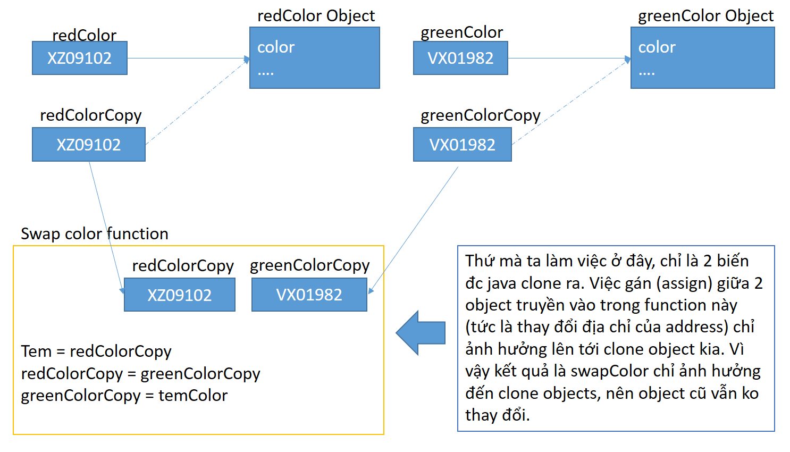
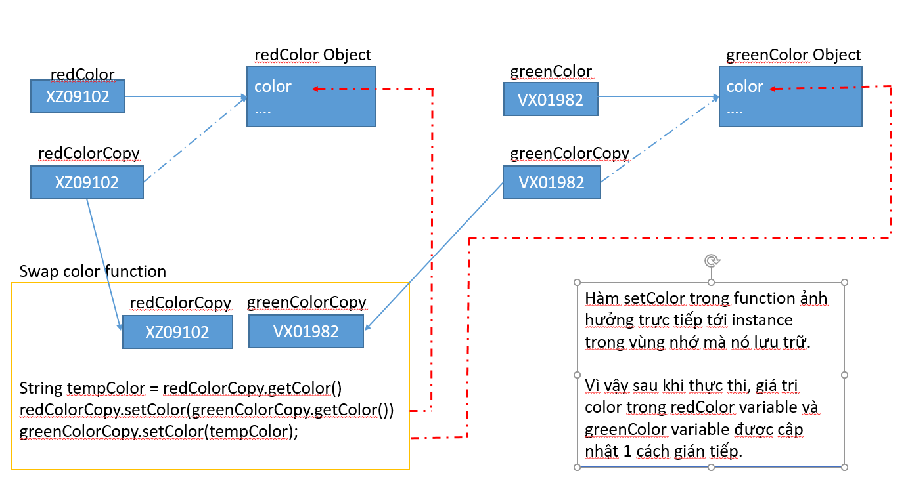

Java - Pass by Value or Pass by Reference
Đây luôn là 1 vấn đề đau đầu khi code với Java. Ngày xưa cũng rớt phỏng vấn vì 1 câu hỏi như thế này.
Xin khẳng định luôn, Java luôn truyền tham trị.
Xem ví dụ ObjectReference trong source code để biết thêm thông tin chi tiết
Ví dụ 1: swap 2 object
Open file này lên ObjectReference. và chạy function swapTwoObjectAndShowResult để kiểm tra kết quả.
Cái hàm swap thì ai cũng biết rồi
function swapTwoObject (objectA, object B) {
objectC = objectB;
objectB = objectA;
objectA = objectC;
}
Đáng lẽ thì 2 object đó phải đổi giá trị cho nhau, như cái redColor và greenColor trong ví dụ kia rồi. Nhưng mà sao nó vẫn như cũ @@.
Thế nhưng tại sao mà sau khi in két quả ra chả thay đổi cái khỉ gì???
Java vẫn truyền đi tham trị, tuy nhiên giá trị của nó lại hơi đặc biệt 1 tí.
Để giải thích rõ hơn về cái này, cùng xem lại cách mà 1 object Java được khởi tạo như thế nào ở các bài trước nhé.
- Java (Java Vitual Machine) sẽ lấy ra 1 địa chỉ bộ nhớ còn trống trong memory để lưu dữ liệu của object
- Các biến trong đối tượng mới này được gọi là instance variable / field được gán cho các giá trị mặc định nếu nó được khai báo mà chưa gán giá trị
- Sau đó Java sẽ gọi constructor method với các đối số được sử dụng khi tạo object
- Cuối cùng, JVM sẽ trả về địa chỉ bộ nhớ trên ram
- Nếu như một biến được gán giá trị từ việc khởi tạo object, thì Java sẽ gán giá trị của bộ nhớ này cho giá trị của biến đó.
- OBJECT_REFERENCE_ADDRESS_VALUE -------------------------------> OBJECT_DATA
Giải thích như thế này cho dễ hiểu hơn nè.
- Khi khởi tạo đối tượng, biến redColor sẽ chứa địa chỉ vùng nhớ của đối tượng Color
- Đối tượng Color được lưu ở heap
- Biến redColor được lưu ở stack
- Khi gọi function swapColor, đầu tiên JVM sẽ sao chép giá trị của biến redColor sang một biến mới : cloneRedColor
- Biến cloneRedColor và redColor này đều có giá trị chỉ đến vùng nhớ của đối tượng Color mà ta vừa tạo.
- Sau đó, nó truyền biến cloneRedColor này vào function.
Tóm lại. ta cần ghi nhớ, khi khởi tạo đối tượng Color, biến redColor sẽ chứa địa chỉ của vùng nhớ đối tượng Color. Đối tượng Color được lưu ở heap, và giá trị biến redColor đượclưu ở stack.
Ta để ý cái dòng cuối cùng ở trên kia, khi gọi method swapTwoNumber, JAVA không truyền 2 object redColor và greenColor vào trong function, thay vào đó nó clone ra 2 biến mới và gán cái OBJECT_REFERENCE_ADDRESS_VALUE tới cái OBJECT_DATA của cái kia.
Vì vậy, việc swap các giá trị ở trong function đó, là đang làm việc với clone object chứ không phải làm việc với object redColor hay greenColor ở ban đầu.
Sau function, biến copy đó được giải phóng, và vì thằng redColor, greenColor có đc update gì đâu, nên nó vẫn vậy
Xem minh họa về cái function kia hoạt động ntn nhé.
Ta luôn nhớ, thứ mà ta làm việc (variable) chỉ là cái địa chỉ của object đó trên bộ nhớ. Và cái địa chỉ mà nó chỉ tới kia mới thực sự là giá trị của object (attribute đc lưu ở đây).
Vì vậy, trong cái hàm swap kia, thứ nó truyền vào là 2 variable clone từ 2 cái object hiện tại. Do đó, thao tác gán địa chỉ (swap by assign) kia nó chỉ ảnh hưởng tới địa chỉ của clone, chứ ko ảnh hưởng đến địa chỉ thực.
Ví dụ 2: swap 2 object by change attribute
Cũng trong file đó, giờ ta chạy function swapTwoColorAndShowResult
Ở đây, ta viết lại function swapTwoObject như sau
function swapTwoObject (objectA, object B) {
String temp = objectB.getColor();
objectB.setColor(objectA.getColor());
objectA.setColor(temp);
}
Khác với function trước, ở đây ta tiến hành set lại giá trị color của 2 object truyền vào. Và sau khi show kết quả, 2 object đã đc swap 2 color khác nhau. Ta giải thích điều này như thế nào ???
Trong function, mặc dù các biến ta truyền vào chỉ là biến clone địa chỉ của redColor và greenColor. Tuy nhiên, việc gọi function setColor - đã làm thay đổi giá trị của đối tượng color trong vùng nhớ đc tham chiếu tới củathực thể này
Vì vậy mặc dù chỉ là truyền 1 biến clone vào, nhưng kết quả lại khiến vùng nhớ mà 2 biến redColor và greenColor chỉ tới bị thay đổi, nên sau khi thực thi xong, thì giá trị của 2 object chính cũng bị update 1 cách gián tiếp. Xem minh họa:
Mọi thứ ban đầu như ví dụ 1
- Khi khởi tạo đối tượng, biến redColor sẽ chứa địa chỉ vùng nhớ của đối tượng Color
- Đối tượng Color được lưu ở heap
- Biến redColor được lưu ở stack
- Khi gọi function swapColor, đầu tiên JVM sẽ sao chép giá trị của biến redColor sang một biến mới : cloneRedColor
- Biến cloneRedColor và redColor này đều có giá trị chỉ đến vùng nhớ của đối tượng Color mà ta vừa tạo.
- Sau đó, nó truyền biến cloneRedColor này vào function.
Chỉ khác:
- Trong function swapTwoObject by change color kia, khi ta gọi hàm setColor trên biến redColorCopy kia, câu lệnh này làm thay đổi thuộc tính color của đối tượng mà biến redColor copy kia đang trỏ tới.
- Sau khi ra khỏi hàm, biến redColorCopy kia ko tồn tại nữa, nhưng sự thay đổi vùng nhớ mà nó trỏ đến vẫn giữ nguyên.
Ví dụ 3: swap 2 object by change attribute
Tương tự ví dụ 2, giờ ta thêm thuộc tính subColor cho object Color, và các getter setter tương ứng
Sau đó ta sửa lại hàm swapTwoObject lại như sau:
function swapTwoObject (Color objectA, Color objectB) {
Color subColorTem = objectB.getSubColor();
objectB.setSubColor(objectA.getSubColor());
objectA.setSubColor(subColorTem);
}
Và giờ, kết quả khi in ra thì 2 Object đã đc swap color giống ví dụ 2 rồi.
Tóm lại:
- Java pass by value
- Biến trong java không chứa giá trị, mà nó chứa địa chỉ của vùng nhớ chứa giá trị của object
- Khi clone object làm thay đổi giá trị vùng nhớ mà nó trỏ tới, thì cũng ảnh hưởng trực tiếp đến object mà nó tham chiếu tới.
- Lưu ý điều này để viết code cho chính xác.